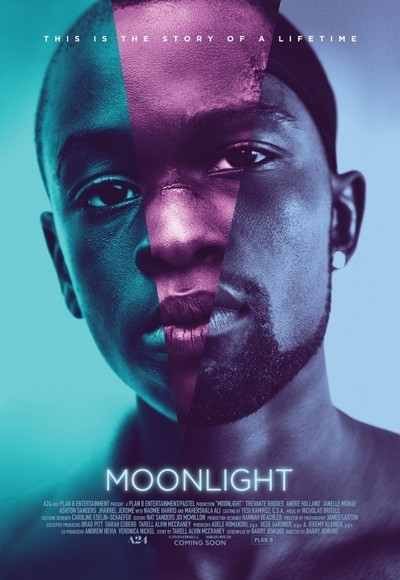

| Categories |
2010 |
1980 |
| Posters |
 |
 |
| Title |
Moonlight |
Raging Bull |
| Director |
Barry Jenkins |
Martin Scorsese |
| Producer(s) |
Adele Romanski, Dede Gardner, Jeremy Kleiner |
Irwin Winkler, Robert Chartoff |
| Writer(s) |
Barry Jenkins, Tarell Alvin McCraney |
Paul Schrader Mardik Martin |
| Actors |
Trevante Rhodes, André Holland, Janelle Monáe, Ashton Sanders, Jharrel Jerome, Naomi Harris, Mahershala Ali |
Robert De Niro, Joe Pesci, Cathy Moriarty |
| Cinematographer |
James Laxton |
Michael Chapman |
| Description |
A look at three defining chapters in the life of Chiron, a young black man growing up in Miami. His epic journey to manhood is guided by the kindness, support and love of the community that helps raise him. |
The story of a middleweight boxer as he rises through ranks to earn his first shot at the middleweight crown. He falls in love with a gorgeous girl from the Bronx. The inability to express his feelings enters into the ring and eventually takes over his life. He eventually is sent into a downward spiral that costs him everything. |
| Release Date |
October 21nd, 2016 |
December 19th, 1980 |